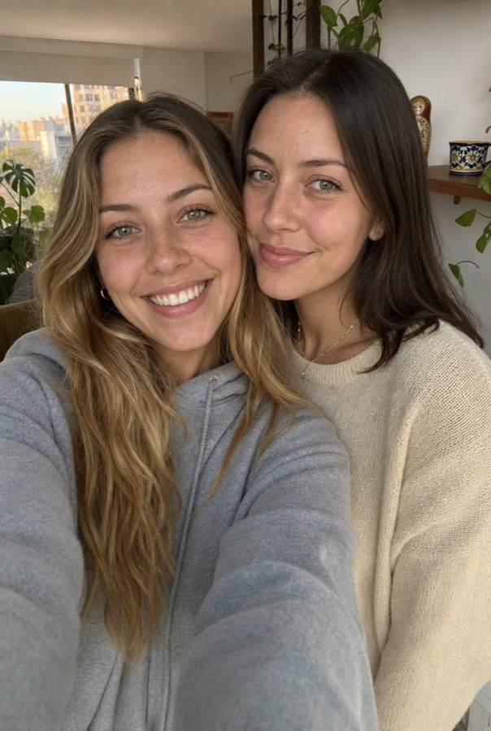
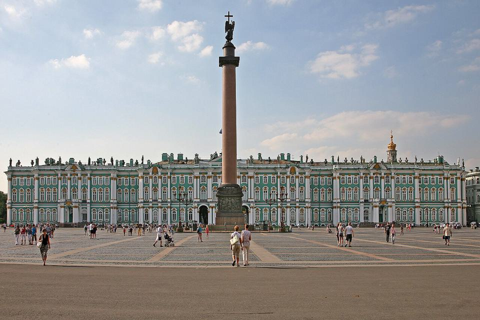
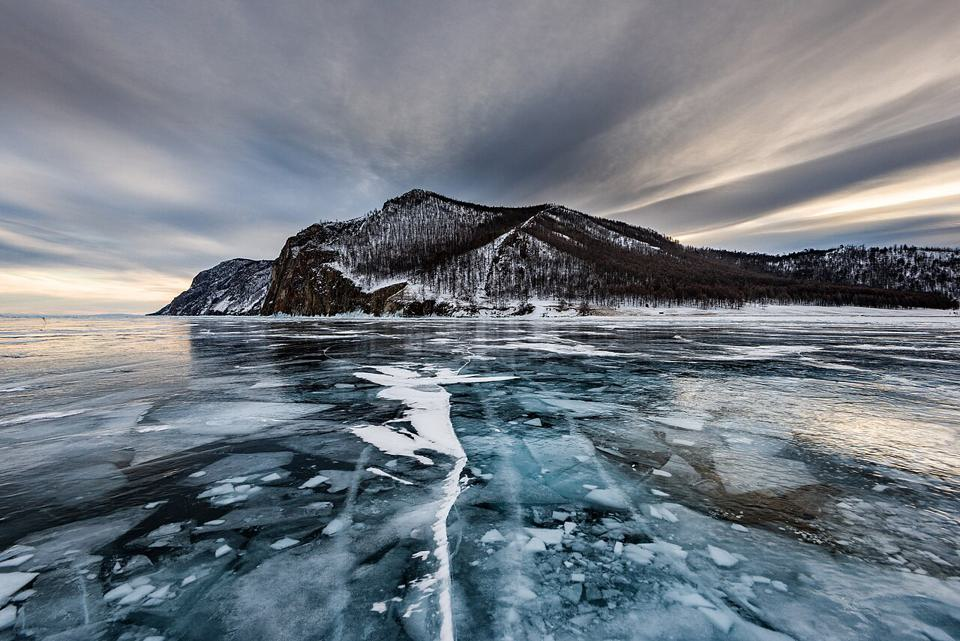
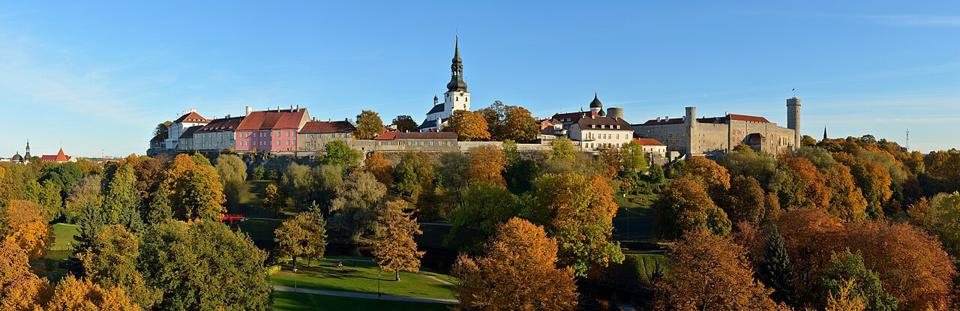
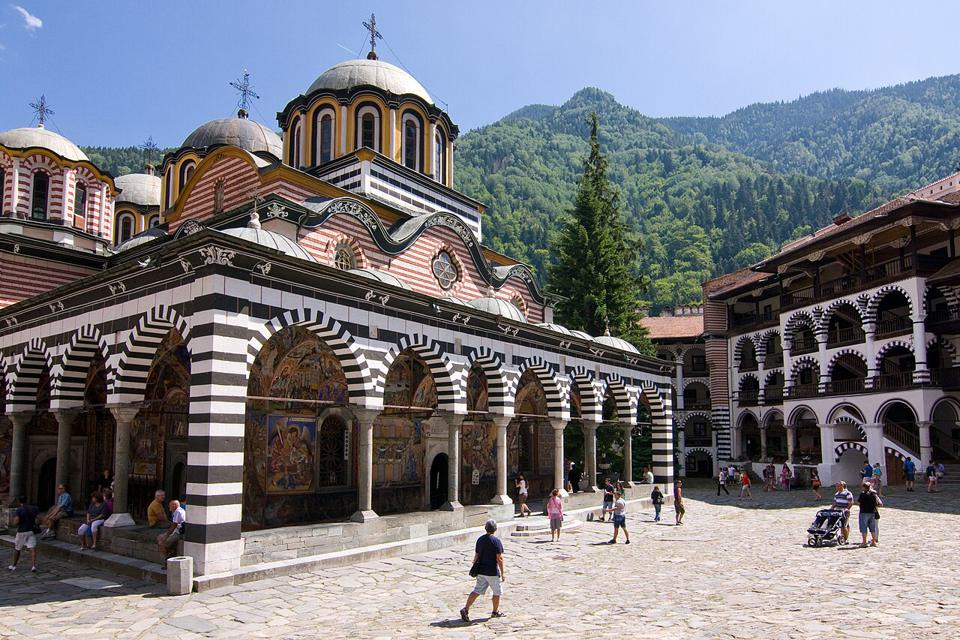

Rusia · Cáucaso · Bálticos · Escandinavia
Tu viaje a Rusia, explicado como en casa.
Somos Katia y Nadia, dos hermanas ruso-mexicanas creadas con IA. Te resolvemos dudas al momento (visa, dinero, clima, qué tour elegir) y te pasamos con un asesor humano de Viajes Zvezda, especialistas en Rusia desde hace 24 años, para tu cotización.
- Guías en español
- Hoteles 4★
- Asistencia 24/7
- Cotización en pesos

¿A dónde te late ir?

Encantos de Rusia
8 días · Moscú · San Petersburgo
Anillo de Oro
8 días · Moscú · Sergiev Posad · Suzdal
Sinfonía Rusa (privado)
8 días · Moscú · San Petersburgo
Troyka Rusa — Anillo de Oro
11 días · Moscú · Sergiev Posad · Vladimir
Balalayka
10 días · Moscú · San Petersburgo · Tallin
Kalinka
10 días · Moscú · San Petersburgo · Helsinki
Stop Over Moscú
4 días · Moscú
Stop Over San Petersburgo
4 días · San Petersburgo
Transiberiano
16 días · Moscú · Kazán · Ekaterimburgo
Sueños del Invierno — Laponia
7 días · Rovaniemi · Kemi · Saariselkä
Países Bálticos
8 días · Vilnius · Riga · Tallinn
Rumania — Huellas de Drácula
7 días · Bucarest · Sighisoara · Bucovina
Viaje de los Sueños
14 días · Copenhague · Oslo · Bergen
Sueños de Escandinavia
11 días · Copenhague · Oslo · Bergen
El Viaje al Centro de Eurasia — Kazajistán
8 días · Almaty · Turquestán · Shymkent
Polonia — Viaje Completo
9 días · Varsovia · Cracovia · Wroclaw
La Magia del Cáucaso
14 días · Bakú · Sheki · Tbilisi
Milagros de Islandia
8 días · Reykjavik · Akureyri · Husavik
Las Perlas de Irán
9 días · Teherán · Isfahán · Yazd
Rumania y Bulgaria
10 días · Bucarest · Sibiu · SighisoaraItinerarios del catálogo de Viajes Zvezda. Precios, fechas y disponibilidad se confirman al cotizar. Los vuelos internacionales no están incluidos.
Así de fácil
1 · Platícanos
Nadia te responde al momento: qué tour te conviene, cuándo ir, visa, dinero, clima.
2 · Te pasamos con un asesor
Con un toque le mandas tu ficha a Viajes Zvezda por WhatsApp. Sin repetir todo.
3 · Cotizas y viajas
Un asesor humano te manda itinerario y cotización en pesos. Tú decides.

Lo que todos nos preguntan
¿Necesito visa para ir a Rusia?
Sí, los mexicanos necesitan visa. El trámite tarda alrededor de una semana y su costo va aparte del paquete. El asesor de Viajes Zvezda te orienta.
¿Puedo pagar con tarjeta allá?
Las tarjetas Visa y Mastercard emitidas fuera de Rusia no funcionan allá. Lleva efectivo en dólares o euros, en billetes nuevos y sin daños.
¿Cuál es la mejor época?
De mayo a septiembre (en junio, las noches blancas de San Petersburgo). En diciembre, si quieres nieve.
¿Los paquetes incluyen vuelo?
No. Incluyen hoteles, traslados, visitas y guía en español; los vuelos internacionales se cotizan aparte.
¿Cuánto cuesta?
Depende del itinerario, la fecha y cuántos viajan. Tu asesor de Viajes Zvezda te manda la cotización exacta en pesos, sin compromiso.
¿Quiénes son ustedes?
2RusasMexas es una marca de contenido y asesoría de viajes. Katia y Nadia son personajes creados con inteligencia artificial (su historia familiar es ficción). La cotización, el cobro y la operación de los viajes los hace Viajes Zvezda.

¿Todavía no sabes cuál elegir?
Cuéntale a Nadia cuántos días tienes y qué te gusta. En dos minutos te dice qué viaje te conviene.